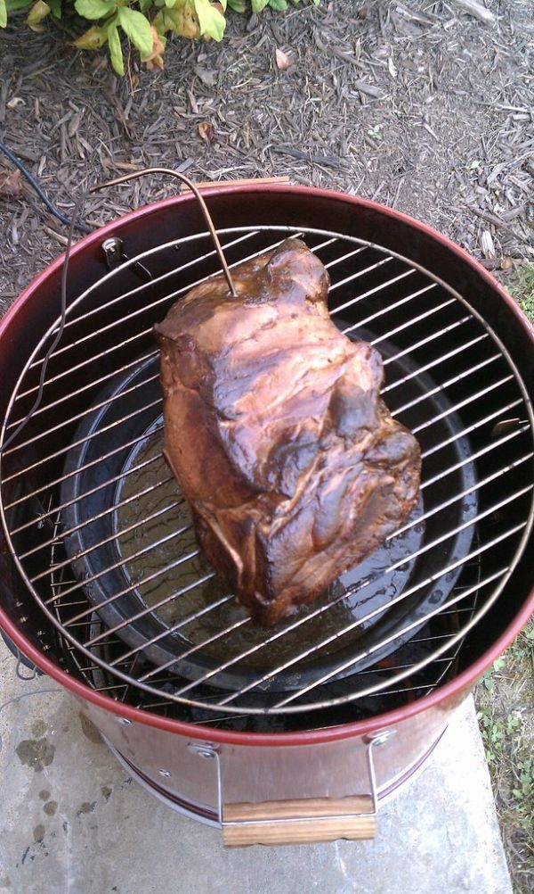

Barbecue Pork Shoulder

Photo: benuski (CC BY-SA 2.0)
Pork shoulder simmered until tender, sliced, and baked under a ketchup and brown sugar spice sauce.
Directions
- Cover meat with slightly salted water and cook over medium heat 2-2 1/2 hours till tender. Drain. Slice into thin slices place in 2 quart baking dish. Combine all the spice ingredients and spoon over pork slices. Bake at 300 degrees for 45 minutes. Turn meat occasionally.
- Cover the meat with slightly salted water and cook over medium heat 2 to 2 1/2 hours, until tender.
- Drain.
- Slice into thin slices and place in a 2-quart baking dish.
- Combine all the spice ingredients and spoon over the pork slices.
- Bake at 300 degrees for 45 minutes, turning the meat occasionally.
Goes well with
https://baron-3dl.github.io/normans-kitchen/recipe/barbecue-pork-shoulder.html